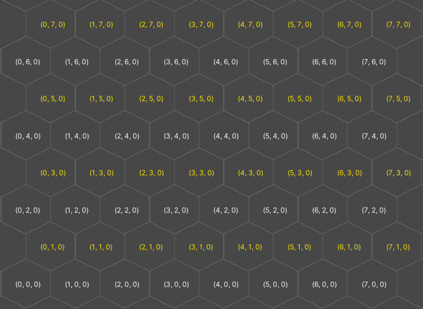
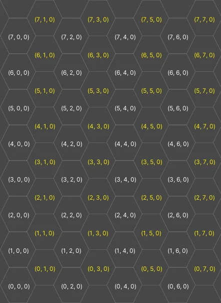

Create hexagonal tilemaps, which use a 2D grid of hexagonal tiles. Hexagonal tiles are often used in strategic tabletop games, because they have consistent distance between their centres and any point on their edge, and neighboring tiles always share edges. This makes them ideal for constructing almost any kind of large play area and allows players to make tactical decisions regarding movement and positioning.
The two types of hexagonal tilemap in Unity are point top and flat top.
A point top tilemap has the following properties:

A flat top tilemap has the following properties:

To create a hexagonal tilemap, do the following:
Import your sprites. For more information, refer to Import a sprite or spritesheet texture and Cut out sprites from a texture.
Note: If you have a spritesheet with hexagon sprites, you can still slice them into rectangles as usual in the Sprite Editor.
To create a tile palette with a hexagonal grid, create a tile palette and set its type to either Hexagonal Point Top or Hexagonal Flat Top.
To create a hexagonal tilemap to paint on, create a tilemap in the scene and set its Cell Layout to Hexagon.
If you import individual sprites, you can also set the Sprite Mode of the imported texture to Polygon, then use the Sprite Polygon Mode Editor to cut out the hexagon. For more information, refer to Sprite Editor tab reference.